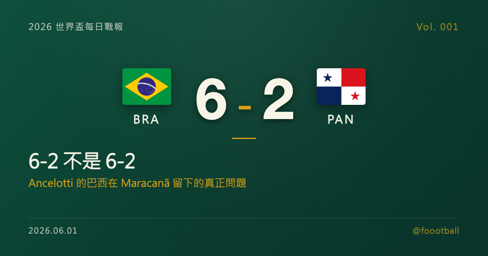

世界盃倒數 11 天：5/31 全球熱身賽全紀錄 + 6-2 不是 6-2

2026 世界盃每日戰報 Vol. 001
§1 即時比分戰報（5/31 全球熱身賽）
| 賽事 | 比分 | 場館 | 焦點 |
|---|---|---|---|
| 🇰🇷 南韓 — 🇹🇹 千里達 | 5 - 0 | Provo BYU South Field | 孫興慜 40' / 43'(P) 兩響、趙圭成 65' / 76' 兩響、黃喜燦 73'(P) |
| 🇨🇭 瑞士 — 🇯🇴 約旦 | 4 - 1 | St. Gallen Kybunpark | 恩博洛 28'(P)、恩多耶 33'、沙卡 55'(P)、法斯納赫 79';法庫里 52'(JOR) |
| 🇧🇷 巴西 — 🇵🇦 巴拿馬 | 6 - 2 | 里約 Maracanã | 維尼修斯 1'、卡塞米羅 39'、雷揚 53'、帕奎塔 60'、伊戈爾·蒂亞戈 63'(P)、達尼洛 81';穆里約 14'、哈維 84'(PAN) |
| 🇨🇻 維德角 — 🇷🇸 塞爾維亞 | 3 - 0 | 里斯本 Estádio do Restelo | 皮納 11'、杜阿爾特 59'、本希莫爾 63' |
| 🇩🇪 德國 — 🇫🇮 芬蘭 | 4 - 0 | Mainz MEWA ARENA | 溫達夫 34' / 57'、維爾茨 48'、穆夏拉 63' |
| 🇺🇸 美國 — 🇸🇳 塞內加爾 | 3 - 2 | Charlotte Bank of America Stadium | 德斯特 7'、普利西奇 20'、巴洛貢 63';馬內 44' / 52'(SEN) |
| 🇪🇨 厄瓜多 — 🇸🇦 沙烏地 | 2 - 1 | Harrison Red Bull Arena | 波羅佐 34'、瓦倫西亞 51';曼達什 86'(KSA) |
| 🇲🇽 墨西哥 — 🇦🇺 澳洲 | 1 - 0 | Pasadena Rose Bowl | 瓦斯奎茲 27' 頭槌 |
| 🇯🇵 日本 — 🇮🇸 冰島 | 1 - 0 | 東京 Japan National Stadium | 小川航基 87' 絕殺 |
| 🇨🇿 捷克 — 🇽🇰 科索沃 | 2 - 1 | Prague epet ARENA | 拉德拉 12'、赫洛熱克 32';埃梅拉胡 81'(KOS) |
| 🇵🇱 波蘭 — 🇺🇦 烏克蘭 | 0 - 2 | Wrocław Tarczyński Arena | 雅雷姆丘克 34'、雅爾莫連科 44'(UKR) |
§2 排行榜：FIFA Top 10 + 26 人名單公布進度
§3 賽事摘要
🇧🇷 巴西 6 - 2 巴拿馬：詳見 §4 焦點觀察。
🇩🇪 德國 4 - 0 芬蘭：Naglesmann 帶隊熱身穩定推進。Undav 上半場 34' + 下半場 57' 雙響，Wirtz 在 48' 接連入網、Musiala 63' 完成大局。對手實力有限，比分意義不大，但 Wirtz × Musiala 的中前場連線已能默契啟動。
🇺🇸 美國 3 - 2 塞內加爾：地主隊在 Charlotte 主場熱身，Dest 7' 開場、Pulisic 20' 接力、Balogun 63' 鎖定領先。但全場被破門兩次，後防仍是隱憂。塞內加爾是非洲傳統強隊，這場分數差比預期小，給地主隊敲了警鐘。
🇨🇭 瑞士 4 - 1 約旦：Embolo 28' 點球破門、Xhaka 45+9' 也罰進點球（這場踢出 9 分鐘補時）。瑞士世界盃前狀態維持中段強隊水準，4 球大勝對排名遠低於己的對手在預期內。
🇺🇦 烏克蘭 2 - 0 波蘭：Yaremchuk 34' + Yarmolenko 44' 各 1 球。比賽在波蘭主場 Wrocław 進行 - 兩隊的特殊地緣關係讓這場有額外意義。波蘭已未取得世界盃資格，這場是烏克蘭的賽前壓力測試。
🇨🇻 佛得角 3 - 0 塞爾維亞：本日最大冷門。佛得角 FIFA 排名約第 65、塞爾維亞約第 26，排名差將近 40。佛得角是 2026 年世界盃首次參賽的非洲新軍，這場狀態值得後續追蹤。
🇨🇿 捷克 2 - 1 科索沃：兩支均無進入會內賽資格，Ladra 12' + Hlozek 32' 早早確立優勢，下半場讓對手追回 1 球。
🇯🇵 日本 1 - 0 冰島：Ogawa 87' 絕殺。比分悶，但 Moriyasu 已穩定在 4-2-3-1 試陣中。日本世界盃同組對手公布前，這場主要意義在「不丟球」。
§4 焦點觀察：6-2 不是 6-2 — Ancelotti 的巴西在 Maracanã 留下的真正問題
2026 年 5 月 31 日，Maracanã。
比賽開始不到 2 分鐘，維尼修斯（Vinícius Júnior）在禁區左前緣接到一次橫向短傳，沒有調整、沒有觀察、左腳直接起腳。皮球從禁區外劃出一道弧線，穿過巴拿馬門將的指尖。
72,140 個座位的看台一起站起來。
但這篇文章想看的鏡頭不在看台上，在替補席。站著的那個白髮義大利人，就是這場比賽真正的主角：卡洛·安切洛蒂（Carlo Ancelotti）。
巴西最後以 6 - 2 大勝。但這場 6 - 2 的意義，從來不是 6 - 2。
Ancelotti 60 年來第一位
安切洛蒂在 2025 年 5 月 12 日從皇家馬德里離任，飛到里約熱內盧，接下巴西國家隊。這件事的歷史意義不是「皇馬王朝的傳奇來巴西了」這麼簡單。
他是巴西自 1965 年以來第一位外籍主帥。60 年。整整 60 年。從佩雷拉、從帕雷拉、從鄧加、從蒂特，巴西的國家隊歷代主帥全部是巴西人。這不是排外，這是巴西人對「桑巴足球」的身分認同 - 我們踢的是這種球，必須由理解這種球的人來教。
打破這個慣例，靠的不是足球哲學，是焦慮：自 2002 年五星巴西捧起金盃以來，巴西已經 24 年沒拿過世界盃。最近兩屆連 4 強都沒進。2022 年卡達，他們被克羅埃西亞 PK 淘汰在 8 強。
安切洛蒂在 2025 年 6 月 5 日首次帶兵，0 - 0 戰平厄瓜多爾。5 天後對巴拉圭拿下首勝，巴西正式取得世界盃資格。從那之後到今天的 5/31，他帶巴西打了 10 場，5 勝 2 和 3 負。已續約到 2030 年。但 10 場裡，從沒有過今天這種比分。
中場換 10 人的訊息
更值得看的是怎麼贏的。
上半場結束巴西 2 - 1 領先，安切洛蒂中場大幅輪換 - 連門將阿利森（Alisson）都被換下，由埃德森（Ederson）接手。整場 90 分鐘，只有後衛雷歐·佩雷拉（Léo Pereira）踢滿全場。
下半場第 8 分鐘，53 分。剛上場的拉揚（Rayan）抓到巴拿馬門將奧蘭多·摩斯凱拉的出擊失誤，從禁區外起腳吊射空門。3 - 1。這是這位 19 歲伯恩茅斯邊鋒第一個成年國家隊進球。
60 分，盧卡斯·帕奎塔（Lucas Paquetá）禁區邊緣抽射折射進門。4 - 1。63 分，伊戈爾·提亞戈（Igor Thiago）罰進點球。5 - 1。81 分，達尼洛接到直塞球後遠柱掃射。6 - 1。
下半場 4 球全部來自第二組陣容。
這個訊息可以兩面看。正面：26 人名單已經能在「首發換掉」之後繼續維持壓制，陣容深度真的有。反面：開賽剩 13 天，安切洛蒂的首發 11 人還沒拿定主意，這場比賽其實是再一次的試人賽 - 不是定型賽。
對球迷來說，這兩面都成立。但對教練來說，13 天之後試人的時間就沒了。
6 球贏球，但失 2 球的問題
第 14 分鐘，巴拿馬阿米爾·穆里約（Amir Murillo）主罰任意球，皮球折射在巴西前鋒馬泰烏斯·庫尼亞（Matheus Cunha）身上後變線入網。技術上記為庫尼亞烏龍。
第 84 分鐘，巴拿馬卡洛斯·哈維（Carlos Harvey）在禁區內接到二點補射得手。
兩個失球都不是巴拿馬的攻擊力打進來的，是巴西自己給的。第一球是定位球防守站位、第二球是禁區內失位。
賽後媒體評論直指：巴西在攻防轉換之間的防守，仍可能是這支球隊在世界盃上的隱憂。
對手是巴拿馬。對手的世界盃水準是「能進會內賽就值得開心」的層級。而 6 球大勝的同一場，巴西被破門兩次。
13 天後對摩洛哥
13 天後，6 月 13 日下午 6 點（台北 6 月 14 日清晨 6 點），巴西的世界盃首戰在新澤西 MetLife Stadium 開打。
對手不是巴拿馬。是摩洛哥。
2022 年卡達世界盃打進 4 強的摩洛哥。淘汰過西班牙、淘汰過葡萄牙的摩洛哥。在大舞台上最會密集防守、最會等對手出錯然後一擊斃命的摩洛哥。
巴西今晚的 6 球，有 4 球來自第二組陣容打巴拿馬第二組陣容的下半場。
巴西今晚的 2 個失球，會被摩洛哥的影片分析師反覆看。
維尼修斯開場那一球很美。安切洛蒂在替補席的存在很有歷史感。Maracanã 的歡呼很真實。
但這些東西 13 天之後不在了。在的是攝氏 27 度、半濕的草皮、一群把巴西當成「該贏的對手」的摩洛哥球員，和一個 60 年來第一次不由巴西人帶領的巴西隊。
6 - 2 不是 6 - 2。是還沒解開的那兩球。
📌 特刊預告：本日 Brazil 6 - 2 Panama 觸發 4 條話題性 trigger，明日（6/2）將加發特刊深入解析 Ancelotti 的巴西世界盃策略。
@foootball | 2026 世界盃每日戰報 Vol. 001 | 2026-06-01
Tags：世界盃, 巴西, Ancelotti, 維尼修斯, 摩洛哥, 足球